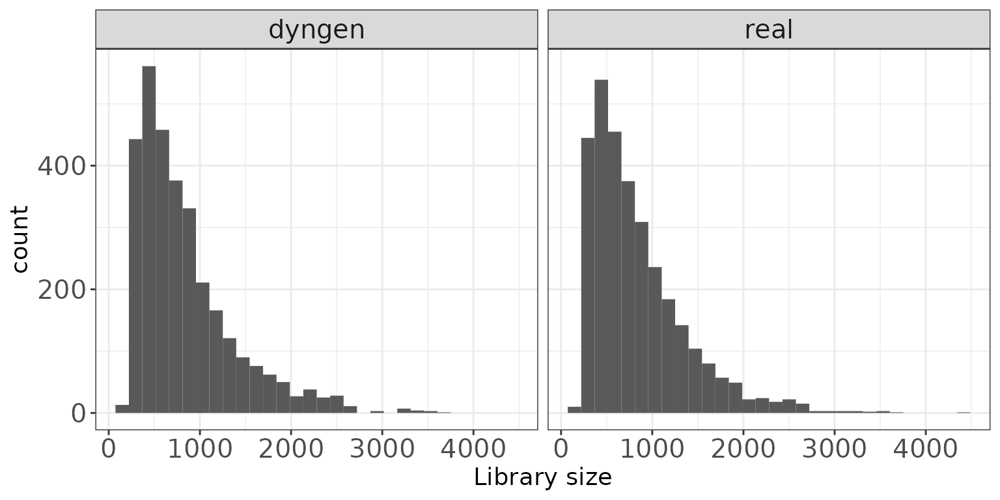
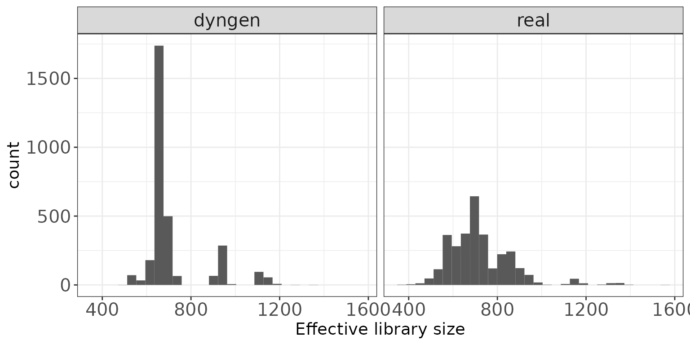
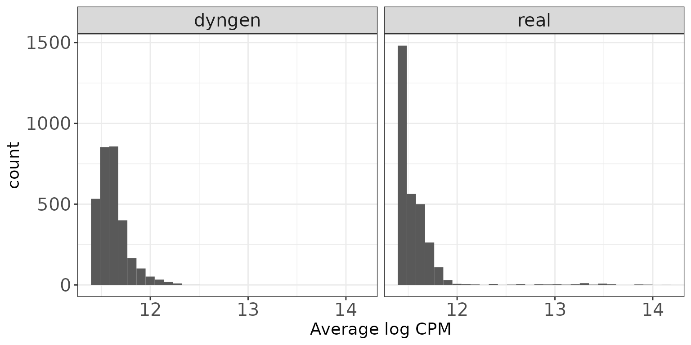

Advanced: Comparison to reference dataset
Source:vignettes/advanced_topics/comparison_reference.Rmd
comparison_reference.RmdIn this vignette, we will take a look at characteristic features of dyngen versus the reference dataset it uses. To this end, we’ll be using countsimQC (Soneson and Robinson 2018) to calculate key statistics of both datasets and create comparative visualisations.
Run dyngen simulation
We use an internal function from the dyngen package to download and cache one of the reference datasets.
library(tidyverse)
library(dyngen)
set.seed(1)
data("realcounts", package = "dyngen")
name_realcounts <- "zenodo_1443566_real_silver_bone-marrow-mesenchyme-erythrocyte-differentiation_mca"
url_realcounts <- realcounts %>% filter(name == name_realcounts) %>% pull(url)
realcount <- dyngen:::.download_cacheable_file(url_realcounts, getOption("dyngen_download_cache_dir"), verbose = FALSE)We run a simple dyngen dataset as follows, where the number of cells and genes are determined by the size of the reference dataset.
backbone <- backbone_bifurcating_loop()
num_cells <- nrow(realcount)
num_feats <- ncol(realcount)
num_tfs <- nrow(backbone$module_info)
num_tar <- round((num_feats - num_tfs) / 2)
num_hks <- num_feats - num_tfs - num_tar
config <-
initialise_model(
backbone = backbone,
num_cells = num_cells,
num_tfs = num_tfs,
num_targets = num_tar,
num_hks = num_hks,
gold_standard_params = gold_standard_default(),
simulation_params = simulation_default(
total_time = 1000,
experiment_params = simulation_type_wild_type(num_simulations = 100)
),
experiment_params = experiment_snapshot(
realcount = realcount
),
verbose = FALSE
)
# the simulation is being sped up because rendering all vignettes with one core
# for pkgdown can otherwise take a very long time
set.seed(1)
config <-
initialise_model(
backbone = backbone,
num_cells = num_cells,
num_tfs = num_tfs,
num_targets = num_tar,
num_hks = num_hks,
verbose = interactive(),
download_cache_dir = tools::R_user_dir("dyngen", "data"),
simulation_params = simulation_default(
total_time = 1000,
census_interval = 2,
ssa_algorithm = ssa_etl(tau = 300/3600),
experiment_params = simulation_type_wild_type(num_simulations = 10)
),
experiment_params = experiment_snapshot(
realcount = realcount
)
)
out <- generate_dataset(config, make_plots = TRUE)
out$plot
Both datasets are stored in a list for easy usage by countsimQC.
Run countsimQC computations
Below are some computations countsimQC makes. Normally these are not visible to the user, but for the sake of transparency these are included in the vignette.
library(countsimQC)
## Define helper objects
nDatasets <- length(ddsList)
colRow <- c(2, 1)
panelSize <- 4
thm <-
theme_bw() +
theme(
axis.text = element_text(size = 15),
axis.title = element_text(size = 14),
strip.text = element_text(size = 15)
)Compute key characteristics
obj <- countsimQC:::calculateDispersionsddsList(ddsList = ddsList, maxNForDisp = Inf)
sampleCorrDF <- countsimQC:::calculateSampleCorrs(ddsList = obj, maxNForCorr = 500)
featureCorrDF <- countsimQC:::calculateFeatureCorrs(ddsList = obj, maxNForCorr = 500)Summarize sample characteristics
sampleDF <- map2_df(obj, names(obj), function(x, dataset_name) {
tibble(
dataset = dataset_name,
Libsize = colSums(x$dge$counts),
Fraczero = colMeans(x$dge$counts == 0),
TMM = x$dge$samples$norm.factors,
EffLibsize = Libsize * TMM
)
})Summarize feature characteristics
featureDF <- map2_df(obj, names(obj), function(x, dataset_name) {
rd <- SummarizedExperiment::rowData(x$dds)
tibble(
dataset = dataset_name,
Tagwise = sqrt(x$dge$tagwise.dispersion),
Common = sqrt(x$dge$common.dispersion),
Trend = sqrt(x$dge$trended.dispersion),
AveLogCPM = x$dge$AveLogCPM,
AveLogCPMDisp = x$dge$AveLogCPMDisp,
average_log2_cpm = apply(edgeR::cpm(x$dge, prior.count = 2, log = TRUE), 1, mean),
variance_log2_cpm = apply(edgeR::cpm(x$dge, prior.count = 2, log = TRUE), 1, var),
Fraczero = rowMeans(x$dge$counts == 0),
dispGeneEst = rd$dispGeneEst,
dispFit = rd$dispFit,
dispFinal = rd$dispersion,
baseMeanDisp = rd$baseMeanDisp,
baseMean = rd$baseMean
)
})Summarize data set characteristics
datasetDF <- map2_df(obj, names(obj), function(x, dataset_name) {
tibble(
dataset = dataset_name,
prior_df = paste0("prior.df = ", round(x$dge$prior.df, 2)),
nVars = nrow(x$dge$counts),
nSamples = ncol(x$dge$counts),
AveLogCPMDisp = 0.8 * max(featureDF$AveLogCPMDisp),
Tagwise = 0.9 * max(featureDF$Tagwise)
)
})Data set dimensions
These bar plots show the number of samples (columns) and features (rows) in each data set.
Number of samples (columns)
ggplot(datasetDF, aes(x = dataset, y = nSamples, fill = dataset)) +
geom_bar(stat = "identity", alpha = 0.5) +
xlab("") + ylab("Number of samples (columns)") +
thm + theme(axis.text.x = element_text(angle = 90, hjust = 1, vjust = 0.5))Number of features (rows)
Dispersion/BCV plots
Disperson/BCV plots show the association between the average abundance and the dispersion or “biological coefficient of variation” (sqrt(dispersion)), as calculated by edgeR (Robinson, McCarthy, and Smyth 2010) and DESeq2 (Love, Huber, and Anders 2014). In the edgeR plot, the estimate of the prior degrees of freedom is indicated.
edgeR
The black dots represent the tagwise dispersion estimates, the red line the common dispersion and the blue curve represents the trended dispersion estimates. For further information about the dispersion estimation in edgeR, see Chen, Lun, and Smyth (2014).
ggplot(featureDF %>% dplyr::arrange(AveLogCPMDisp),
aes(x = AveLogCPMDisp, y = Tagwise)) +
geom_point(size = 0.25, alpha = 0.5) +
facet_wrap(~dataset, nrow = colRow[2]) +
geom_line(aes(y = Trend), color = "blue", size = 1.5) +
geom_line(aes(y = Common), color = "red", size = 1.5) +
geom_text(data = datasetDF, aes(label = prior_df)) +
xlab("Average log CPM") + ylab("Biological coefficient of variation") +
thm
DESeq2
The black dots are the gene-wise dispersion estimates, the red curve the fitted mean-dispersion relationship and the blue circles represent the final dispersion estimates.For further information about the dispersion estimation in DESeq2, see Love, Huber, and Anders (2014).
ggplot(featureDF %>% dplyr::arrange(baseMeanDisp),
aes(x = baseMeanDisp, y = dispGeneEst)) +
geom_point(size = 0.25, alpha = 0.5) +
facet_wrap(~dataset, nrow = colRow[2]) + scale_x_log10() + scale_y_log10() +
geom_point(aes(y = dispFinal), color = "lightblue", shape = 21) +
geom_line(aes(y = dispFit), color = "red", size = 1.5) +
xlab("Base mean") + ylab("Dispersion") +
thm
Mean-variance plots
This scatter plot shows the relation between the empirical mean and variance of the features. The difference between these mean-variance plots and the mean-dispersion plots above is that the plots in this section do not take the information about the experimental design and sample grouping into account, but simply display the mean and variance of log2(CPM) estimates across all samples, calculated using the cpm function from edgeR (Robinson, McCarthy, and Smyth 2010), with a prior count of 2.
ggplot(featureDF, aes(x = average_log2_cpm, y = variance_log2_cpm)) +
geom_point(size = 0.75, alpha = 0.5) +
facet_wrap(~dataset, nrow = colRow[2]) +
xlab("Mean of log2(CPM)") + ylab("Variance of log2(CPM)") +
thm
Library sizes
This plot shows a histogram of the total read count per sample, i.e., the column sums of the respective data matrices.
ggplot(sampleDF, aes(x = Libsize)) + geom_histogram(bins = 30) +
facet_wrap(~dataset, nrow = colRow[2]) +
xlab("Library size") + thm
TMM normalization factors
This plot shows a histogram of the TMM normalization factors (Robinson and Oshlack 2010), intended to adjust for differences in RNA composition, as calculated by edgeR (Robinson, McCarthy, and Smyth 2010).
ggplot(sampleDF, aes(x = TMM)) + geom_histogram(bins = 30) +
facet_wrap(~dataset, nrow = colRow[2]) +
xlab("TMM normalization factor") + thm
Effective library sizes
This plot shows a histogram of the “effective library sizes”, defined as the total count per sample multiplied by the corresponding TMM normalization factor.
ggplot(sampleDF, aes(x = EffLibsize)) + geom_histogram(bins = 30) +
facet_wrap(~dataset, nrow = colRow[2]) +
xlab("Effective library size") + thm
Expression distributions (average log CPM)
This plot shows the distribution of average abundance values for the features. The abundances are log CPM values calculated by edgeR.
ggplot(featureDF, aes(x = AveLogCPM)) + geom_histogram(bins = 30) +
facet_wrap(~dataset, nrow = colRow[2]) +
xlab("Average log CPM") + thm
Fraction zeros per sample
This plot shows the distribution of the fraction of zeros observed per sample (column) in the count matrices.
ggplot(sampleDF, aes(x = Fraczero)) + geom_histogram(bins = 30) +
facet_wrap(~dataset, nrow = colRow[2]) +
xlab("Fraction zeros per sample") + thmFraction zeros per feature
This plot illustrates the distribution of the fraction of zeros observed per feature (row) in the count matrices.
ggplot(featureDF, aes(x = Fraczero)) + geom_histogram(bins = 30) +
facet_wrap(~dataset, nrow = colRow[2]) +
xlab("Fraction zeros per feature") + thm
Sample-sample correlations
The plot below shows the distribution of Spearman correlation coefficients for pairs of samples, calculated from the log(CPM) values obtained via the cpm function from edgeR, with a prior.count of 2.
ggplot(sampleCorrDF, aes(x = Correlation)) + geom_histogram(bins = 30) +
facet_wrap(~dataset, nrow = colRow[2]) +
xlab("Sample-sample correlation") + thm
Feature-feature correlations
This plot illustrates the distribution of Spearman correlation coefficients for pairs of features, calculated from the log(CPM) values obtained via the cpm function from edgeR, with a prior.count of 2. Only non-constant features are considered.
ggplot(featureCorrDF, aes(x = Correlation)) + geom_histogram(bins = 30) +
facet_wrap(~dataset, nrow = colRow[2]) +
xlab("Feature-feature correlation") + thm
Library size vs fraction zeros
This scatter plot shows the association between the total count (column sums) and the fraction of zeros observed per sample.
ggplot(sampleDF, aes(x = Libsize, y = Fraczero)) +
geom_point(size = 1, alpha = 0.5) +
facet_wrap(~dataset, nrow = colRow[2]) +
xlab("Library size") + ylab("Fraction zeros") + thmMean expression vs fraction zeros
This scatter plot shows the association between the average abundance and the fraction of zeros observed per feature. The abundance is defined as the log(CPM) values as calculated by edgeR.
ggplot(featureDF, aes(x = AveLogCPM, y = Fraczero)) +
geom_point(size = 0.75, alpha = 0.5) +
facet_wrap(~dataset, nrow = colRow[2]) +
xlab("Average log CPM") + ylab("Fraction zeros") + thm
References
Chen, Yunshun, Aaron TL Lun, and Gordon K Smyth. 2014. “Differential Expression Analysis of Complex RNA-Seq Experiments Using edgeR.” In Statistical Analysis of Next Generation Sequence Data. Somnath Datta and Daniel S Nettleton (Eds), Springer, New York. https://doi.org/10.1007/978-3-319-07212-8_3.
Love, Michael I, Wolfgang Huber, and Simon Anders. 2014. “Moderated Estimation of Fold Change and Dispersion for RNA-Seq Data with DESeq2.” Genome Biology 15: 550. https://doi.org/10.1186/s13059-014-0550-8.
Robinson, Mark D, Davis J McCarthy, and Gordon K Smyth. 2010. “edgeR: A Bioconductor Package for Differential Expression Analysis of Digital Gene Expression Data.” Bioinformatics 26: 139–40. https://doi.org/10.1093/bioinformatics/btp616.
Robinson, Mark D, and Alicia Oshlack. 2010. “A Scaling Normalization Method for Differential Expression Analysis of RNA-Seq Data.” Genome Biology 11: R25. https://doi.org/10.1186/gb-2010-11-3-r25.
Soneson, CharlotteI, and Mark D Robinson. 2018. “Towards Unified Quality Verification of Synthetic Count Data with countsimQC.” Bioinformatics 34: 691–92. https://doi.org/10.1093/bioinformatics/btx631.